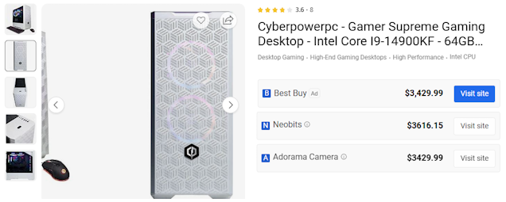
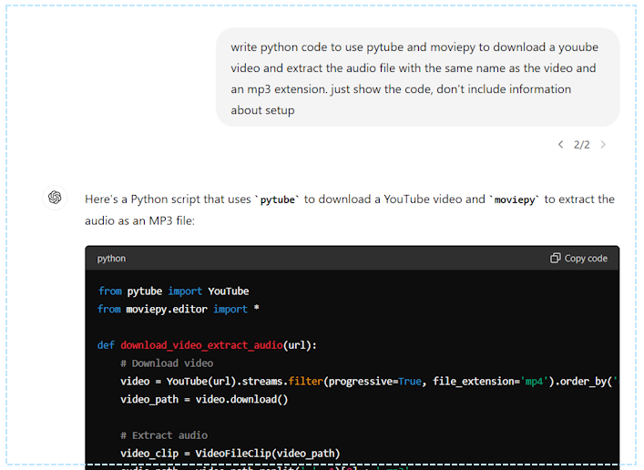
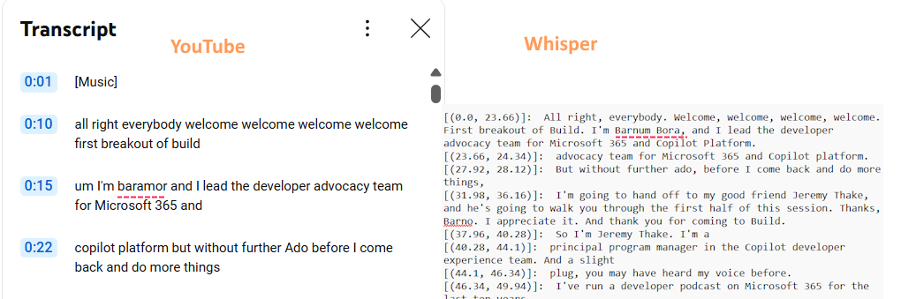

Locally and Privately Extracting Meaning from Video with Transcription, Diarization, and LLMs
My previous entry was about using computer vision and OCR along with various versions of GPT-4 with vision to convert PDFs into text files containing descriptions of images and text-based diagrams. I’m excited by the ability to turn images into words, but I am also excited about turning sound into words!
… and sound into images, images into sound, etc.
Ultimately, I think user experiences should adapt to the person and be multimodal for the benefit of all kinds of people, but another reason for my interest is because there is a lot of useful information that isn’t written down. It must be seen and/or heard. How do we make that information usable?
Microsoft stirred up a lot of controversy these past weeks with Recall and it reminded me why I am so interested in private and local AI applications. That reason is simply that there are a lot of reasons people might hesitate to trust cloud providers with certain information.
Who is this entry for?
I am writing this for as general an audience as possible. The technical details are in the demonstration project and gihub. If you want to do this yourself, I broke it down into each step using jupyter notebooks and included one with the complete process to create a transcript with speakers from a video. Here, I will talk about it at a much higher level.
I am approaching this topic as a continuation of my previous ones about building and grounding chatbots and ingesting PDF content, but I also use these techniques often to create interview and meeting notes and to analyze content.
Teams Copilot does a great job at many of these tasks if you can use it, but the way it is licensed and the fact that it’s locked into Teams limit its utility for me. This works on any video or audio, I can use its output however I like, and it’s private and completely free.
The key thing though is that the transcript and other information I create when I do this is the end of the first step. The next step might be some kind of analysis, additional content generation, indexing, or work by an AI agent.
Local or privately hosted generative AI with open source models and libraries
Everything in this article ran on my desktop computer. It is similar in specs to the configuration shown below (core I9, 64GB memory, with NVIDIA Geforce RTX 4090 24GB).

Let me just start by saying that I completely get that that is an expensive setup and most people don’t have a desktop with a top-end consumer GPU and CPU. The good news is that everything I use here is possible on a lot of consumer hardware, but it will be slower, and you might have to break up the steps a bit. Part of my experiment was to see if I could do everything in a single process with my GPU.
Alternatively, you can do all of this in the cloud in notebooks, containers, or virtual machines using many different providers. The point is that the models and tools are all open source. All of this works on Windows, Mac, and Linux.
The process
This diagram shows the steps.
graph TD
A["Download a video from YouTube using pytube"] --> B["Extract audio from video using MoviePy"]
B --> C["Create transcript using whisper-large-v3"]
C --> D["Identify distinct speakers using pyannote.audio"]
D --> E["Combine Whisper transcript with pyannote speaker data"]
E --> F["Identify speaker names using phi-3-medium"]
F --> G["Create final output"]
Test video
The test video I am using is Developer’s Guide to Customizing Microsoft Copilot - Microsoft Build 2024. I chose it because it was a great presentation, because Jeremy has an accent, and because Barnam and Jeremy introduced themselves and said their names! It’s funny what you notice when you start looking for specific information, but often people forget to introduce themselves.
I use pytube to download videos from YouTube. There are some dodgy websites that will do it for you too.
Extract audio from video using MoviePy
I use moviepy to easily extract the audio track. Pytube and moviepy are venerable and popular, and ChatGPT has no trouble writing code using them.

Create transcript using whisper-large-v3
Whisper is a speech recognition model from OpenAI you can use as a service, but it has an open license which means that, unlike GPT-4 and DALL-E, you can download it and run it yourself. It is available on huggingface and has millions of downloads across its different versions and ranks among the very best automatic speech recognition options.
For comparison:

The YouTube transcript lacks spelling and punctuation and is also less accurate. Where YouTube failed badly, Whisper did a good job phonetically with Barnam’s name. The fact that it spelled it incorrectly isn’t surprising and is even expected.
To me ‘mistakes’ made by a model fall into two categories:
- Things the model should know either through its training or grounding data
- Things that the model does not know or have any way of knowing
The easiest way to identify the second category is to ask yourself if a normal person could do it. If we were talking, and I said his name, could you correctly spell Barnam Bora?
Who said what? Identify distinct speakers using pyannote.audio
If the audio is a single speaker, the whisper transcript would be enough to use with an LLM, but without knowing who said what, there are a lot of questions an LLM (or a person) would not be able to answer. Conceptually, this is the same sort of problem I wrote about in my article about ingesting PDFs. Concepts aside, it is a different problem and requires a different solution.
I use pyannote.audio which is also available as a more robust service to perform diarization. The diarization creates a Rich Transcription Time Marked (RTTM) file, a space-delimited text files containing one turn per line.
This video covers the topic in more depth:
For reference, the first five lines of the output look like this:
SPEAKER Developer’sGuidetoCustomizingMicrosoftCopilot-MicrososftBuild2024 1 10.240 3.324 <NA> <NA> SPEAKER_00 <NA> <NA>
SPEAKER Developer’sGuidetoCustomizingMicrosoftCopilot-MicrososftBuild2024 1 14.257 19.389 <NA> <NA> SPEAKER_00 <NA> <NA>
SPEAKER Developer’sGuidetoCustomizingMicrosoftCopilot-MicrososftBuild2024 1 34.102 0.017 <NA> <NA> SPEAKER_00 <NA> <NA>
SPEAKER Developer’sGuidetoCustomizingMicrosoftCopilot-MicrososftBuild2024 1 34.118 0.456 <NA> <NA> SPEAKER_01 <NA> <NA>
SPEAKER Developer’sGuidetoCustomizingMicrosoftCopilot-MicrososftBuild2024 1 34.574 0.388 <NA> <NA> SPEAKER_00 <NA> <NA>
Combine whisper transcript with pyannote speaker data
At this point we have a file with a transcript and time codes but not speaker information from whisper and another with time codes and speakers without a transcript from pyannote. The code is in this notebook. It also changes the time codes from seconds to something easier to read (hh:mm:ss). One wrinkle to this is that the time codes from the two models don’t line up perfectly, and so the final result often has some issues where the speaker changed in the middle of a line in the whisper transcript, although in this case it was fine.
The result looks like this:
[SPEAKER_00] : [(00:00:00.000, 00:00:23.660)] : All right, everybody. Welcome, welcome, welcome, welcome. First breakout of Build. I'm Barnum Bora, and I lead the developer advocacy team for Microsoft 365 and Copilot Platform.
[SPEAKER_00] : [(00:00:23.660, 00:00:24.340)] : advocacy team for Microsoft 365 and Copilot platform.
[SPEAKER_00] : [(00:00:27.920, 00:00:28.120)] : But without further ado, before I come back and do more things,
[SPEAKER_00] : [(00:00:31.980, 00:00:36.160)] : I'm going to hand off to my good friend Jeremy Thake, and he's going to walk you through the first half of this session. Thanks, Barno. I appreciate it. And thank you for coming to Build.
[SPEAKER_01] : [(00:00:37.960, 00:00:40.280)] : So I'm Jeremy Thake. I'm a
Identify speaker names using phi-3-medium
Often at this point I have to do some manual steps to replace “SPEAKER_00” with a real name because I find that very often, perhaps most of the time, people don’t say their own names or refer to others by name. But still, if I am doing this process, I intend to use the transcript with a language model to get insight from the content.
In this case, Barnam and Jeremy demonstrated excellent presenter skills and the text contains their names. Thanks to this, I can use a language model to extract their names and update the transcript – an perfect example of using a language model to get insight from the content!
For this task I used microsoft/Phi-3-medium-4k-instruct-onnx-directml which is a version of Phi-3-medium-4k-instruct optimized for use with ONNX runtime which makes it super fast on my RTX-4090 GPU. Use it if you have a GPU and are using Windows.
My notebook contains code to pull out a few lines before and after a speaker’s first appearance and build a prompt:
# Create the prompt with the current speaker and their context
prompt = f"""
The following text is a piece of a transcript. Examine the text and if the text identifies the speaker reply with ONLY the full name matching the exact spelling of the person listed as {speaker} and nothing else.
----------------------------------------
{context_text}"""
The output of the function looks like this:
SPEAKER_00: Barnum Bora
SPEAKER_01: Jeremy Thake
Once the file is updated, the final transcript looks like this:
[Barnum Bora] : [(00:00:00.000, 00:00:23.660)] : All right, everybody. Welcome, welcome, welcome, welcome. First breakout of Build. I'm Barnum Bora, and I lead the developer advocacy team for Microsoft 365 and Copilot Platform.
[Barnum Bora] : [(00:00:23.660, 00:00:24.340)] : advocacy team for Microsoft 365 and Copilot platform.
[Barnum Bora] : [(00:00:27.920, 00:00:28.120)] : But without further ado, before I come back and do more things,
[Barnum Bora] : [(00:00:31.980, 00:00:36.160)] : I'm going to hand off to my good friend Jeremy Thake, and he's going to walk you through the first half of this session. Thanks, Barno. I appreciate it. And thank you for coming to Build.
[Jeremy Thake] : [(00:00:37.960, 00:00:40.280)] : So I'm Jeremy Thake. I'm a
[Jeremy Thake] : [(00:00:40.280, 00:00:44.100)] : principal program manager in the Copilot developer experience team. And a slight
Next steps
From here there is still room for improvement. The information extracted from the video contains only what was heard and none of what was seen. For example, one could further improve the pipeline by cutting the video into screen shots at transitions and enhance the content with both images as well as descriptions from a vision model. Often the names of the speakers are displayed as text in the video and looking for names in both places would presumably yield correct spellings for the speaker’s names.
Teams Copilot is exciting to people because it unlocks information and answers questions, but it is locked into Teams. You don’t have to settle for that.
Thanks for reading!
--Doug Ware
June 17, 2024